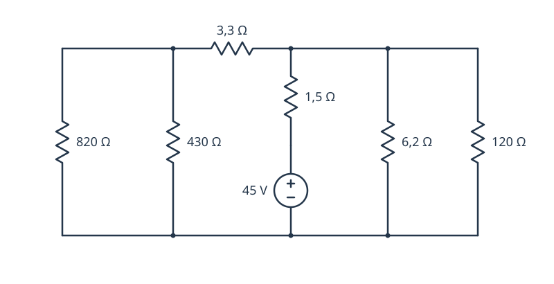
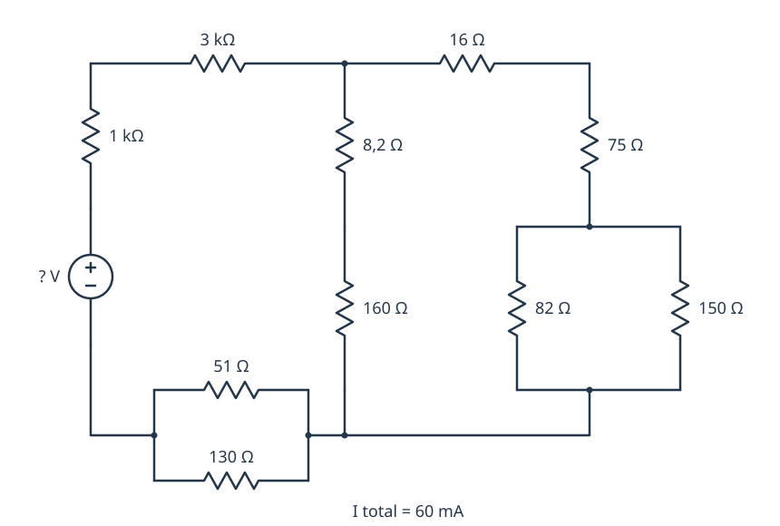
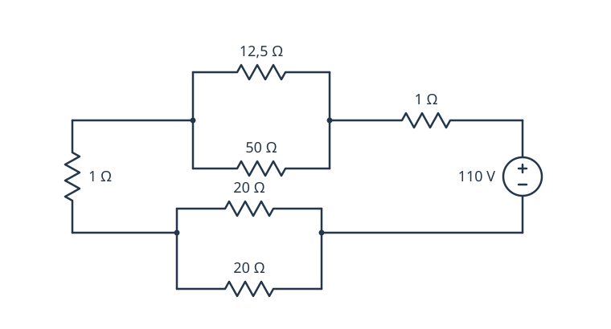
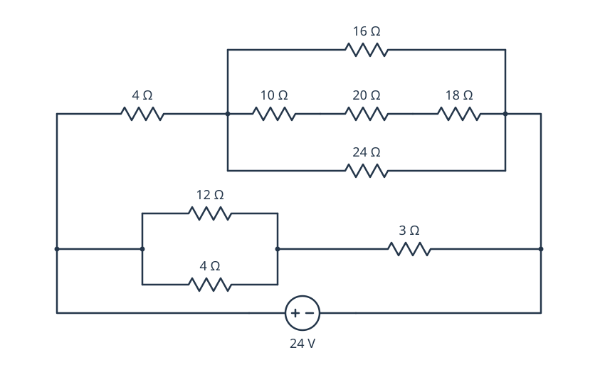
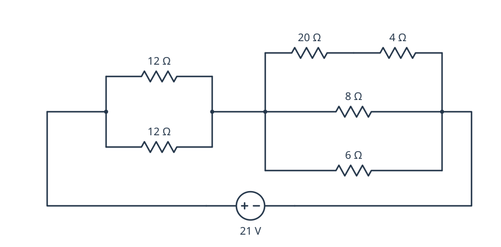
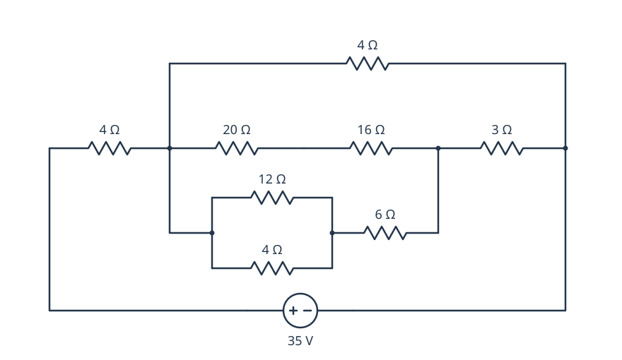

0221 · Montaje y mantenimiento de equipo · Tema 1
Ejercicios de circuitos: Ley de Ohm
Resueltos
R1. Circuito en serie
Con V = 9 V y R₁ = 1 Ω, R₂ = 2 Ω, R₃ = 3 Ω, calcula la resistencia total, la intensidad y el voltaje en cada resistencia.
Ver solución
- R = 1 + 2 + 3 = 6 Ω
- I = 9 / 6 = 1,5 A (igual en todo el circuito)
- V₁ = 1,5 V · V₂ = 3 V · V₃ = 4,5 V (suman 9 V ✔)
R2. Circuito en paralelo
Con V = 9 V y R₁ = 3 Ω, R₂ = 4 Ω, R₃ = 12 Ω, calcula la resistencia total, la intensidad de cada rama y el voltaje en cada resistencia.
Ver solución
- 1/R = 1/3 + 1/4 + 1/12 = 8/12 → R = 1,5 Ω
- V en cada rama = 9 V
- I₁ = 3 A · I₂ = 2,25 A · I₃ = 0,75 A (suman 6 A ✔)
R3. Circuito mixto
Con V = 9 V, R₁ = 3 Ω en serie con el paralelo de R₂ = 4 Ω y R₃ = 12 Ω, calcula la resistencia del paralelo, la total, la intensidad total y los voltajes en R₁ y en R₂/R₃.
Ver solución
- R₂∥R₃ = (4·12)/(4+12) = 3 Ω
- R total = 3 + 3 = 6 Ω → I = 9/6 = 1,5 A
- V(R₁) = 4,5 V · V(paralelo) = 4,5 V
Boletín 1 · Serie, paralelo y mixto
Circuitos redibujados del boletín del curso 2023/24. Resuélvelos con la Ley de Ohm.
En esta web se numeran del 1 al 10: el PDF original repite el número 4. Por eso, el ejercicio 10 de aquí corresponde al ejercicio 9 del PDF.
1. ¿Cuánta corriente produce la fuente a través de la resistencia?
2. ¿Qué valor debe tener la resistencia para que la corriente sea de 3 A?
3. ¿Qué valor debe tener la fuente para que la corriente sea de 1 A con una resistencia de 100 Ω?
4. Calcula la corriente total.
5. Calcula la corriente provocada por las dos fuentes colocadas en serie.
6. Calcula el valor de la resistencia para que la corriente sea de 2,5 A.
7. Calcula la corriente que circula por el circuito.
8. Calcula la corriente que circula por el circuito (resistencias en paralelo).
9. Calcula el voltaje de la fuente para que exista una corriente de 6 A.
La fuente se ha desplazado a la izquierda para facilitar la lectura. Conserva las mismas conexiones: las cinco resistencias están en paralelo entre sus dos terminales. Los 6 A son la intensidad total.
10. Calcula la corriente suministrada por la fuente de 45 V.
Ejercicio 9 del PDF original. Identifica los nodos antes de decidir qué resistencias están en serie y cuáles en paralelo.

{kind=link}
Boletín 2 · Circuitos mixtos
Los cinco circuitos del boletín manuscrito, redibujados conservando los valores y las conexiones. Calcula la resistencia equivalente antes de aplicar la Ley de Ohm a la fuente.
En móvil puedes desplazar los esquemas horizontalmente. Ábrelos ampliados para verlos a mayor tamaño o descarga el SVG para imprimirlo sin pérdida de calidad.
1. Determina el voltaje de la fuente.
La corriente total suministrada por la fuente es de 60 mA. Ten en cuenta que dos resistencias están expresadas en kiloohmios.

{kind=link}
2. Calcula la corriente suministrada por la fuente de 110 V.

{kind=link}
3. Calcula la corriente suministrada por la fuente de 24 V.

{kind=link}
4. Calcula la intensidad suministrada por la fuente de 21 V.

{kind=link}
5. Calcula la intensidad suministrada por la fuente de 35 V.

{kind=link}